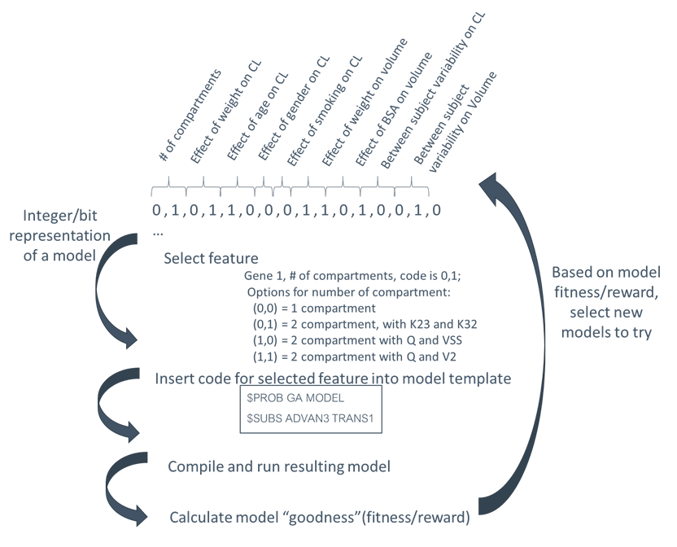

pyDarwin implements a number of machine learning algorithms for model selection.
Machine learning algorithms are broadly divided into two categories:
Supervised learning
Unsupervised learning
For supervised learning, the algorithm “learns” to associate certain patterns (e.g., a collection of bitmap pictures) with a set of labeled examples.
For example, if one has 10,000 pictures of cats and dogs (a training set), with each image labeled as “cat” or “dog”, an artificial neural network (ANN)
can find patterns in the 0s and 1s that are associated with “catness” or “dogness”, and can be fairly successful at predicting for any similar set of bitmaps
(a test set) which is a cat and which is a dog.
In contrast, unsupervised learning has no labeled training set. Linear regression is a simple example of supervised learning.
There is an input (X) and an output (Y) and the algorithm identified patterns that match the inputs to the output (intercept and slope(s)). However,
looking for the best independent variables to include in a linear regression model is an unsupervised learning problem, there is no training set of examples
with the “correct” list of independent variables to include.
The traditional model selection/building process for pop pk models is similarly unsupervised. There is no “labeled” training dataset, no collection of datasets
that are known to be 1 compartment, with Volume~WT. Rather, each dataset facilitates a new learning process and the algorithm must discover relationships across different datasets.
In the case of model selection, the inputs (Xs) are the “features” of the model search (not the model, but the model search)
(number of compartments, covariates, random effects, etc.) and the output is some measure of model goodness.
For pyDarwin, the model goodness is a user-defined function, with a base of the -2LL output, with user-defined penalties, including parsimony (penalties for estimate parameters), convergence, successful covariance step, plus optional
user-written R or Python code that can be executed after each run (“use_r” or “use_python”). This post run code is useful, for example, if the user wants to add
a penalty for under or over prediction of Cmax (basically a penalty for posterior predictive check).
Supervised learning includes algorithms such as regression, artificial neural networks (ANN), decision trees/random forest, and k-nearest neighbor.
Recently, hybrid supervised/unsupervised learning algorithms have been introduced and have proven to be very powerful. The best known of these is deep q network/reinforcement
learning(DQN/RL). DQN/RL is a deep neural network (a slightly more complex ANN). However, unlike traditional supervised ANN, there is no training set.
Rather, the method starts with a randomly selected set of weights for nodes in the ANN. Then, based on this random selection, ANN predicts the best model.
At the start, this model will be far from the “true” optimal model. Starting with a single model, however, provides a very small “training set”, and the ANN is now trained on this model.
This process is repeated until the current best predicted model no longer improves. This approach (start with a random representation of the search space, run a few models,
then train the representation) has been adapted to other traditionally supervised methods including Bayesian optimization (Gaussian process - GP),
Random Forest (RF) and gradient boosted random trees (GBRT). These three hybrid algorithms (GP, RF , GBRT) have been included in pyDarwin’s
algorithm options along with the more traditional Genetic Algorithm (GA) and exhaustive search (EX).
Traditional pop pk/pd model selection uses the “downhill method”, starting, usually at a trivial model, then adding
“features” (compartments, lag times, nonlinear elimination, covariate effects), and accepting the new model if it is better (“downhill”), based on some user-defined, and somewhat informal criteria.
Typically, this user-defined criteria will include a lower -2LL plus usually penalty for added parameters plus some other criteria that the user may feel is important. The downhill method is easily the
most efficient method (fewest evaluations of the reward/fitness to reach the convergence) but is highly prone to local minima. However, downhill does play a role in a very efficient
local search, in combination with a global search algorithm (e.g., GA , GP, RF , GBRT).
Central to understanding the model selection process (with manual or machine learning), is the concept of the search space. The search space is an n-dimensional
space where each dimension represents a set of mutually exclusive options. That is, there likely will be a dimension for “number of compartments”, with possible
values of 1, 2, or 3. Exactly one of these is required (ignoring the possibility of Bayesian model averaging).
Another dimension might be the absorption model, with values of first order, zero order, first order with absorption lag time, etc.). Similarly, candidate
relationships between weight and volume might be: no relationship, linear, or power model. In addition to structural and statistical “features”, other features
of the model, such as initial estimates for parameters, can be searched on. Note that each of these dimensions are discrete, and strictly
categorical (not ordered categorical, i.e., first order isn’t “more than” zero order). With this exception, the model search space is analogous to the
parameter search space used in nonlinear regression. An important difference is that the continuous space in nonlinear
regression has derivatives, and quasi-Newton methods can be used to do a “downhill search” in that space. Please note that quasi-Newton methods are
also at risk of finding local minima, and therefore are sensitive to the initial estimates. In the case of parameter estimation (nonlinear regression), efforts are made to start
the search at a location in the search space near the final estimate, greatly reducing the chance of ending up in a local minimum. No such effort is
made in the traditional downhill model selection method. Rather, the search is usually started at a trivial model, which is likely far from the global minimum.
As the discrete space of model search does not have derivatives, other search methods must be used. The simplest, and the one traditionally used in
model selection, is downhill. While efficient, it can be demonstrated that this method is not robust [1][2]. This lack of robustness is due to
the violation of convexity assumption. That is, the downhill search, in either a continuous space (parameter estimation) or a discrete space (model selection)
assumes that the optimal solution is continuously downhill from every other point in the search space. That is, there are no local minima, you can start anywhere
and you’ll end up in the same place - the global minimum (the results are not sensitive to the “initial estimates”). With this assumption, a covariate will be
“downhill”, regardless of whether tested in a one compartment, two compartment; first order or zero order or any other base model, it’s all downhill, it doesn’t
matter in what sequence you test hypotheses, the answer will be the same. Wade [1] showed that the results of tests of hypotheses do indeed depend on other
features in the model and Chen [2] showed that different sequences of tests will commonly yield different final models.
In contrast to the traditional downhill/local search, all algorithms implemented in pyDarwin are global search algorithms that are expected to have a greater
degree of robustness to local minima than downhill search. Note, however, that all search algorithms (except exhaustive search) make assumptions about
the search space. While none of the algorithms in pyDarwin assume convexity, none are completely robust,
and search spaces can be deceptive [3]. For all algorithms, the basic process is the same, start at one or more random models. Then, test those models and learn a little about
the search space to decide which models to test next. The algorithms differ in how they decide which models will be subsequently tested.
While the global search algorithm provides substantial protection from a local minimum in the model search, the global search algorithm is typically not very
good at finding the one or two final changes that result in the best model. This is illustrated in Genetic Algorithm in that the final change likely
must be made by mutations, a rare event, not by crossover. The solution to this problem is to combine the strength of a global search (robustness to local
minima) with the efficiency of local downhill, or even local exhaustive search. Thus, the global search gets close to the final best solution (much like providing good
initial estimates to NONMEM), and the local search finds the best solution in that local volume of the search space.
The search space is key to the implementation of each algorithm. The overall representation is the same for all algorithms - an n-dimensional discrete search space. The values in each
dimension are then coded into several forms, bit strings and integer string. Ultimately, the model is constructed from the integer string, e.g., values for the number
of compartment dimensions are 1|2|3. However, for GA, this must be coded as bit string. There is one additional representation, referred to as a minimal binary string,
which is used for the local exhaustive step.
The overall process is shown in Figure 1 below:

The same 3 files are required for any search, whether EX , GA , GP, RF or GBRT.
These file are described in required files.
The exhaustive search algorithm is simple to understand. The search space is initially represented as a string of integers - one for each dimension. To facilitate the search,
this integer string is coded into a “minimal binary”.
Genetic Algorithm (GA) is a reproduction of the mathematics of evolution/survival of the fittest. A more detailed discussion on GA can be found here, and
a very readable (but somewhat dated) reference is Genetic Algorithms in Search, Optimization and Machine Learning 13th ed. Edition by David Goldberg. Details of the options (not all of which are available in pyDarwin)
can be found at here.
Briefly, GA presents the search space as a bit string, with each “gene” being a binary number that is decoded into the integer value for that option. For example, for a dimension of Additive vs Additive + proportional
residual error, the integer codes would be:
It is straightforward enough to code these values [1,2] into a binary [0,1]. For dimensions with more than 2 values, more than 1 bit will be needed. For example, if 1 or 2 or 3 compartments are searched, the
string representation might be:
One compartment (ADVAN1)
Two compartment (ADVAN3)
Three compartment (ADVAN11)
and the bit string representation might be:
1 - [0,0]
2 - [0,1] and [1,0]
3 - [1,1]
The bit strings for each gene are concatenated into a “chromosome”. The search starts with a population of random bit strings. These bit strings are decoded, and NONMEM control files constructed from the template file
by substituting the selected text from the token set. The resulting NONMEM control file is run and the fitness is calculated.
The next generations is created by randomly selecting sets of parent candidates from the population. These parent candidates are then selected based on Tournament selection.
Once the sets of parents are selected, they undergo crossover and mutation and a new generation is created. This process is repeated until no further improvement is seen.
Gaussian Process is one of the two options used in Bayesian Optimization. The Gaussian Process specifies the form of the prior and posterior distribution.
Initially the distribution is random, as is the case for all the global search algorithms. Once some models have been run, the distribution can be updated (the “tell” step) and new, more informative samples can be
generated (the “tell” step).
Random Forest consists of splitting the search space (based on the “goodness” of each model in this case), thus continuously dividing the
search space into “good” and “bad” regions. As before, the initial divisions are random, but become increasingly well informed as real values for the fitness/reward of models are
included.
Gradient Boosted Random Tree
is similar to Random Forest, but may increase the precision of the tree building by progressively building the tree and calculating a gradient of the reward/fitness with respect to each decision.